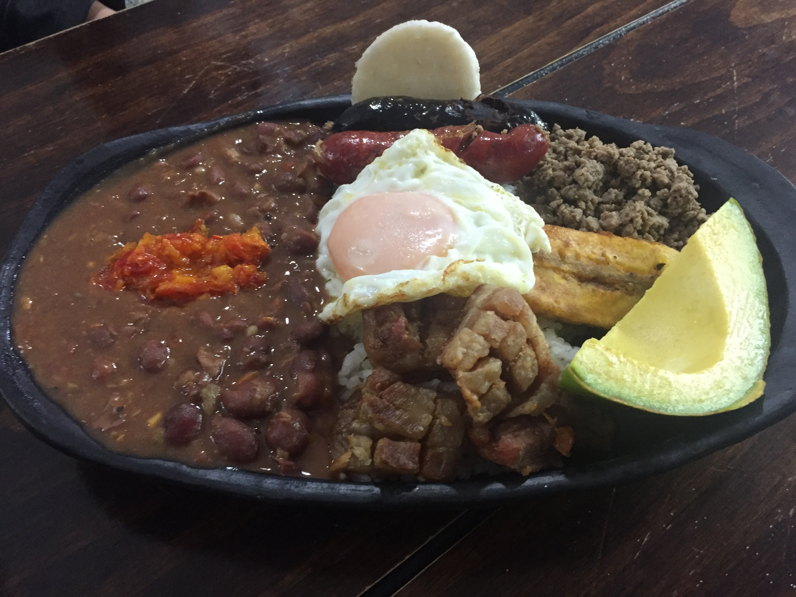

Bandeja paisa

Por Jdvillalobos - Trabajo propio, CC BY-SA 4.0, Wikipedia.com
La bandeja paisa es el plato insignia de la gastronomía paisa y uno de los platos más representativos de Colombia. Es propio de los departamentos de la región Paisa: Antioquia, Caldas, Risaralda y Quindío.
Ingredientes
- 3 tazas de frijoles cargamanto o rojos grandes
- 2 cucharadas de aceite
- 2 lbs de carne molida
- 1 taza de hogao o guiso
- 2 lbs de tocino, Chicharrones, frescos
- 6 huevos
- 2 Plátanos dulces o tostones (plátanos machos)
- Arepas al gusto
- sal al gusto
Hogao
- 4 cebollas grandes
- Tomates (jitomates)
- Cilantro
- Sal
- Vinagre
- Achiote
- Aceite, al gusto
Preparación
- Remoja los frijoles en agua hasta cubrirlos la noche anterior a cocinarlos. Cocina los frijoles en esa misma agua, con la mitad del aceite. Cuando estén blandos, agrega la sal.
- Mientras tanto, sofríe la carne molida en aceite a fuego medio alto añadiendo la mitad del hogao y revuélvelo bien. Corta en trocitos el tocino y fríe los chicharrones. Mézclalo todo y cocínalo en una sartén durante 10 minutos.
3
-
Cuando los frijoles estén blandos, añade el guiso restante y cocina entre 5 y 10 minutos adicionales. Luego, en una sartén, coloca aceite para freír los plátanos dulces o los patacones y los huevos fritos. Sírvelo en bandejas con arroz, aguacate y las arepas.
- Hogao o guiso: Mézclalo todo y cocínalo en una sartén durante 10 minutos
- Arepas: En un tazón suficientemente grande para amasar, coloca la harina de maíz. Sobre la harina agrega aceite.
- Añádele sal al agua, viértela y mezcla hasta conseguir una masa consistente.
-
Haz bola de masa en tu mano y aplánala con tus dos manos hasta darle una forma redondita.
- Luego en una sartén con aceite, ásalas hasta que se doren ambos lados.
Receta tomada de quericavida.com
Más Recetas
Ir al inicio